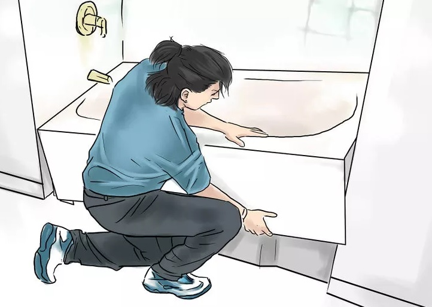
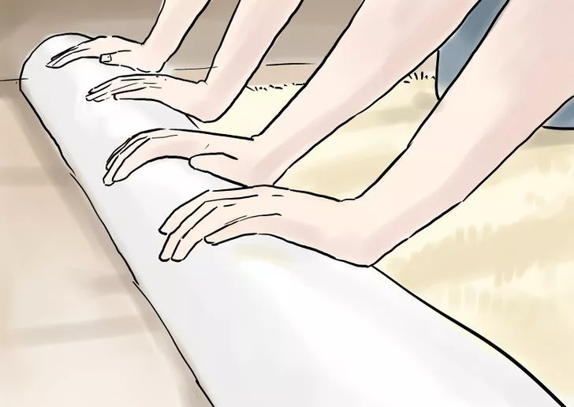

Install plumbing fixtures as necessary. Install the bathtub, shower enclosure, and any other large plumbing fixtures which will interface with finished walls. Make sure plumbing rough-ins are correctly located, and pipes are protected and securely anchored.
Install the wall board or paneling on interior walls. Traditionally, builders will use gypsum wallboard, wood, or masonite paneling for this purpose. Panels are generally jacked 3/8 inch (1.0 cm) above the floor to avoid moisture from floor spills and regular mopping when you clean the house. There are many interior wall products available, so the installation process will depend on the material used. Apply finish to gypsum wallboard, taping and skimming/floating all joints to an acceptable level of finish. Finish/texture any ceilings during this step if applicable.
Place wall trim. Put up any trim you are using for baseboards, crown mouldings, and corners, and install your interior doors and jambs. If you are using natural wood trim and mouldings, you will want to paint the walls prior to this step. Pre-finishing the trim before installing will make the final finish easier, but any nail-holes will probably still need attention after installation.
Caulk, paint, and install wall coverings on any walls that require it. Most likely, you will want to prime wallboard, then apply a finish coat. Use a paint roller where possible, cutting-in with brushes around appurtenances and in corners. Be sure to trim out the electrical devices, install lights and other fixtures, and install breakers in panel boxes if they were not pre-installed.
Install cabinets and other mill work. You will probably need at least basic kitchen storage cabinets and a bathroom vanity cabinet for a sink, other cabinets may include a bar, upper storage cabinets, and lower units with drawers for kitchen utensils and supplies.
Install flooring. Note that for carpet floors, base boards are installed prior to flooring, leaving 3/8 inch (1.0 cm) for the carpet to tuck underneath it. For hardwood or composite floors, this trim is installed after the floor is finished.
Install appliances and have the utilities turned on. To start checking to make sure everything is working appropriately, activate the water and electricity to start experimenting with your handiwork. Adjust the jobs as necessary and work on finishing the house to a state at which you'll want to move in and start enjoying your new home.
 